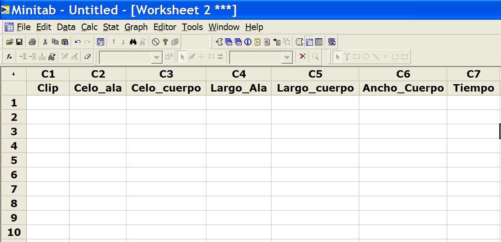

12. Anova
Cuando las variables de entrada (x's) son de tipo discreto y las de salida (y) son de tipo continuo, esta herramienta nos permite tanto identificar las variables significativas como determinar la relación matemática entre entradas y salidas.
Algo análogo a lo que conseguíamos con la regresión solo que el tipo de variables a la que se puede aplicar es diferente.
El material básico de lectura es el archivo "12.pdf", que se divide en los siguientes bloques:
Bloque 1) transparencias 1 a 12.
Los conceptos básicos acerca de Anova. Las transparencias más importantes son las nº 2 y nº 7, donde se describe conceptualmente lo que hace Anova.
Bloque 2) transparencias 13 a 25.
Ejemplo con una sola variable x de entrada.


|
Las variables x son discretas y las de salida continuas; lo que se busca es detectar diferencias entre las medias de cada conjunto de y asociadas a un valor de x dado.
| |
|
Las variables x son discretas o continuas y
las de salida continuas; lo que se busca es detectar diferencias entre
las medias de cada conjunto de y asociadas a un valor de x dado.
| |
|
Las variables x son discretas y
las de salida discretas; lo que se busca es detectar diferencias entre
las medias de cada conjunto de y asociadas a un valor de x dado.
|
Toda la etapa de análisis de Seis Sigma es algo así como un embudo al cual le metemos toda la información de variables de entrada y de salida con el único fin de poder identificar aquellas variables de entrada que "hacen" la diferencia. El fin último de todo esto no es otro que el de preparar el terreno para la herramienta "estrella" de Seis Sigma, que no es otra que el DoE.
¿Aprecia el alumno alguna diferencia cualitativa entre, p. ej. análisis gráfico, ensayos de hipótesis, regresión y Anova?